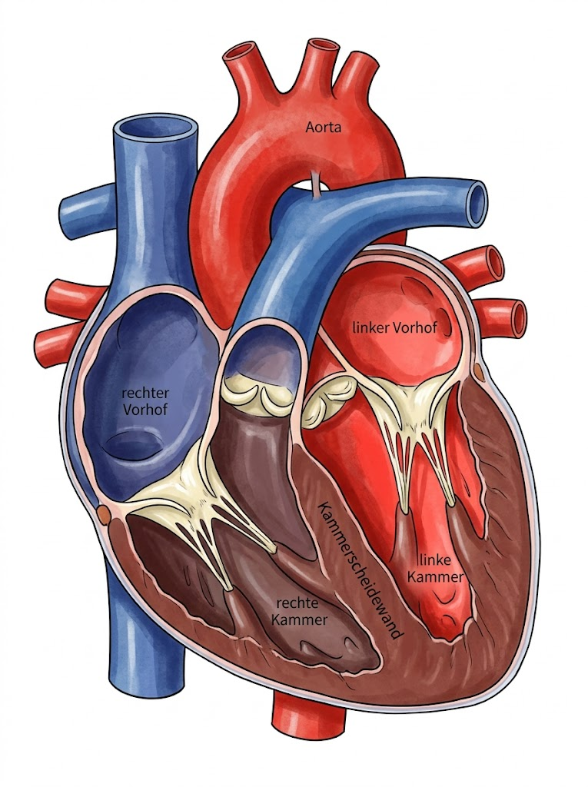
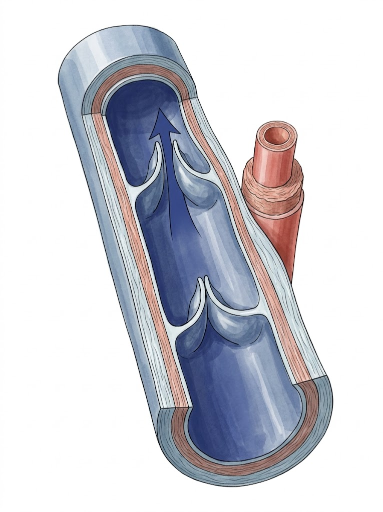
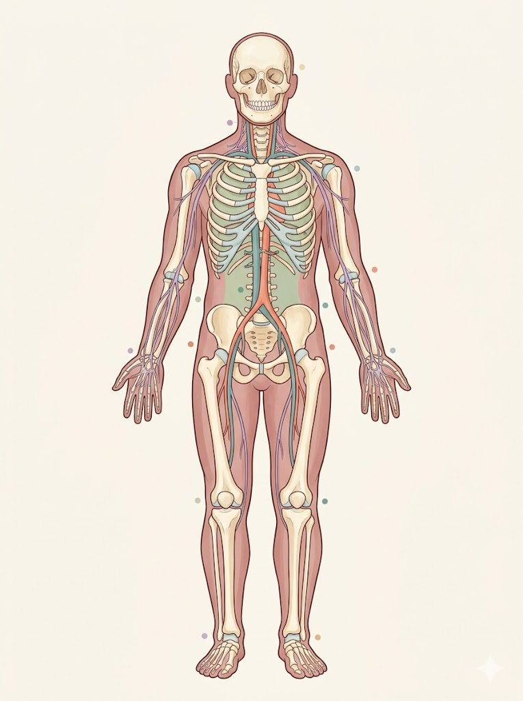
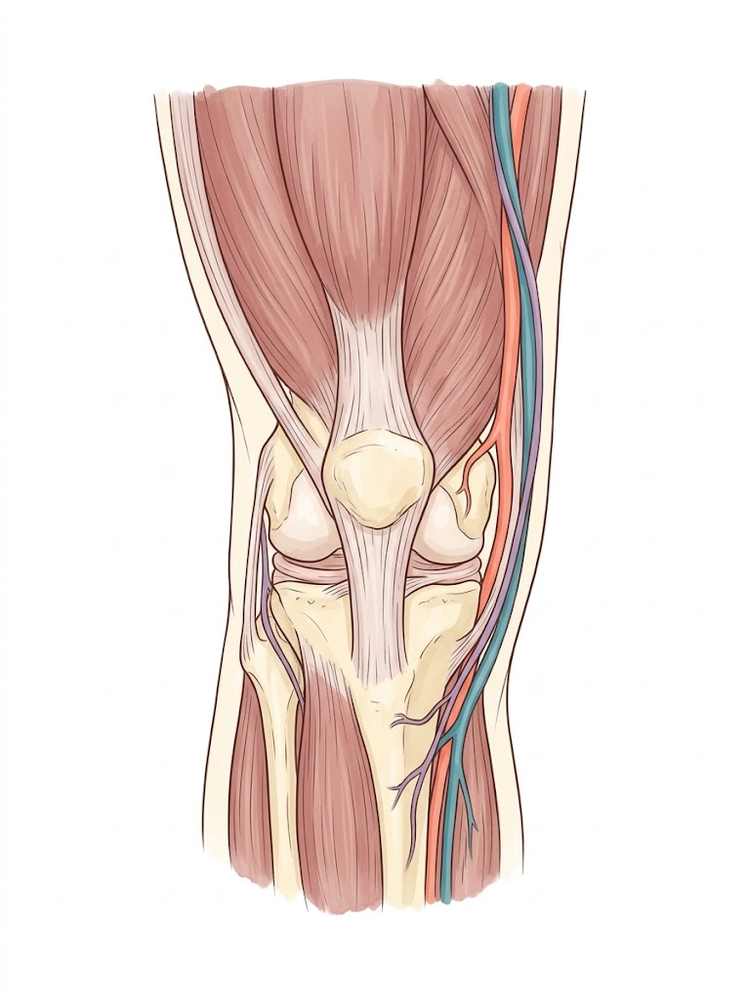
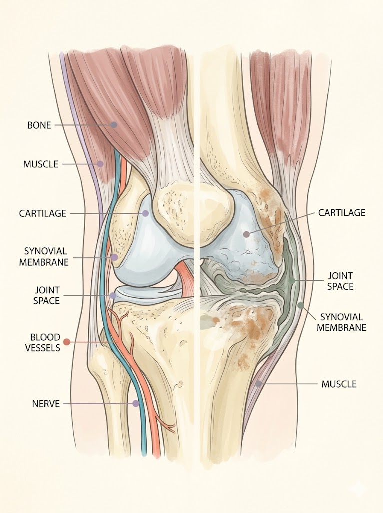
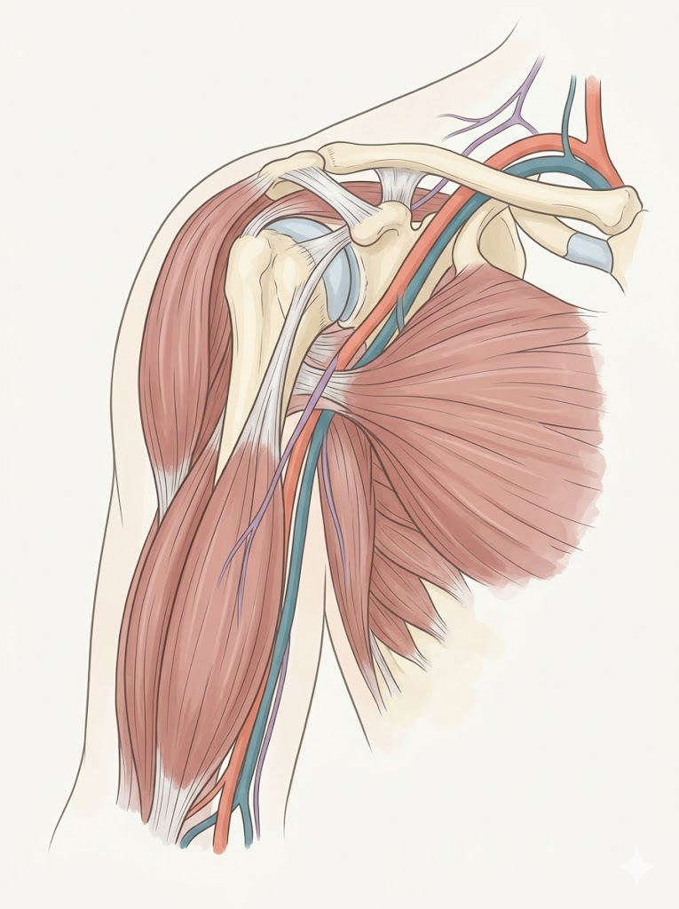
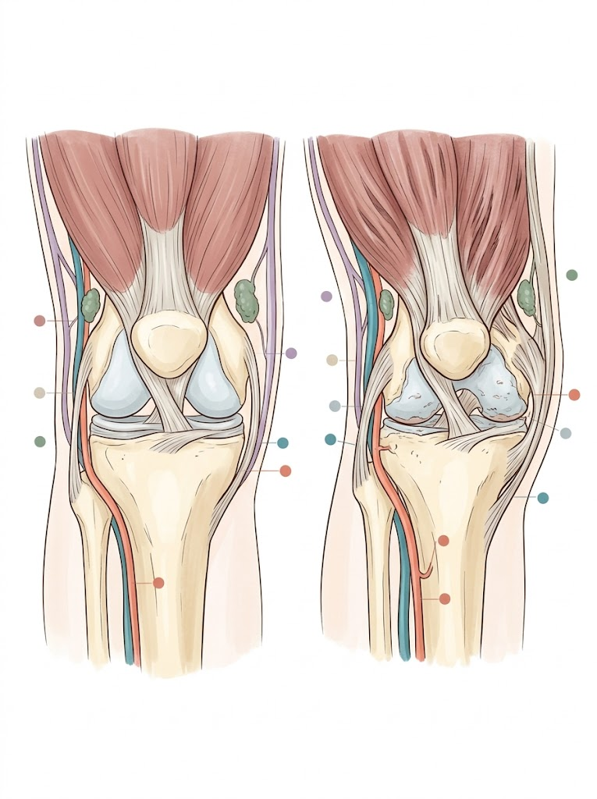
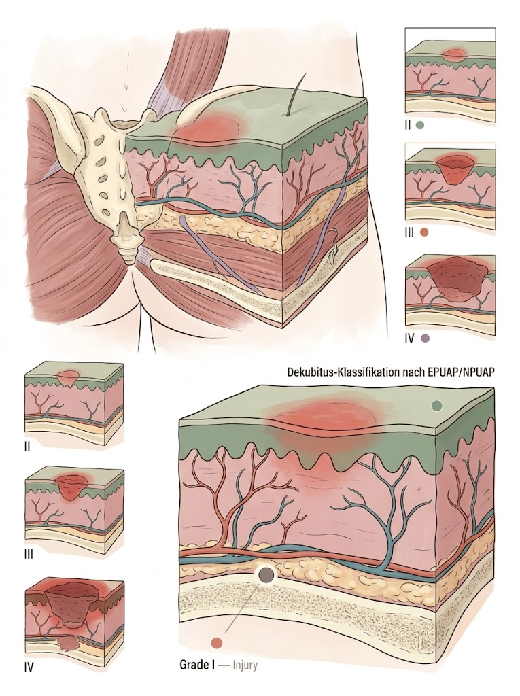
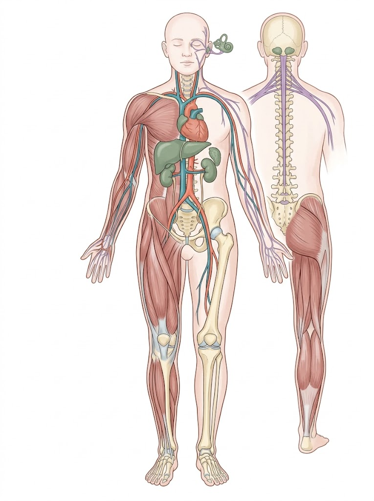
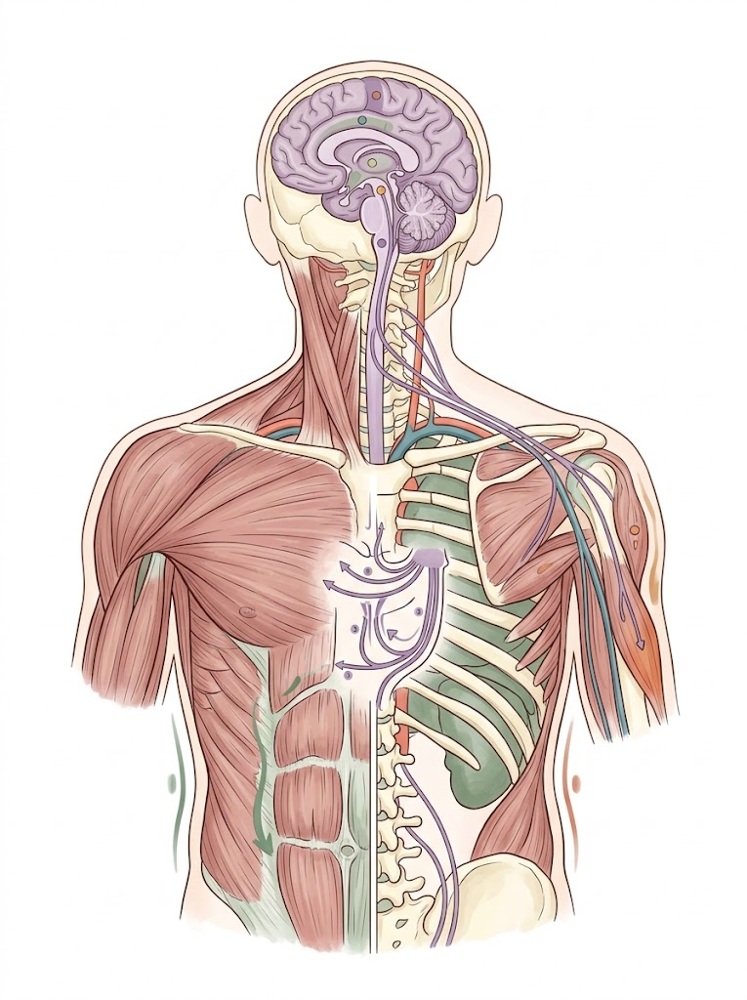

Anatomie: Echte Lehrbuchfarben

Herz — Frontalschnitt4 Kammern, Klappen, Sehnenfäden, Aorta, Vena cava

Vene mit VenenklappenLängsschnitt, 3 Wandschichten, Arterie zum Vergleich
Anatomie (erste Version)

7 Massen und 6 ZwischenräumeKinästhetik — Ganzkörper anterior

Kontraktur — wenn Gelenke versteifenKniegelenk anterior, Muskeln + Gefäße

Der Teufelskreis: Scharnier einrostetGesund vs. Kontraktur mit Labels

Welches Gelenk ist am meisten gefährdet?Schulter-Anatomie mit Gefäßen

Vergleich: Gesundes Gelenk vs. KontrakturSide-by-side Kniegelenk

Dekubitus-Klassifikation (EPUAP/NPUAP)Haut-Querschnitt, 4 Stadien

Sturzrisikofaktoren (DNQP)Ganzkörper anterior + posterior

Das Bobath-KonzeptGehirn, Nervensystem, Rückenmark